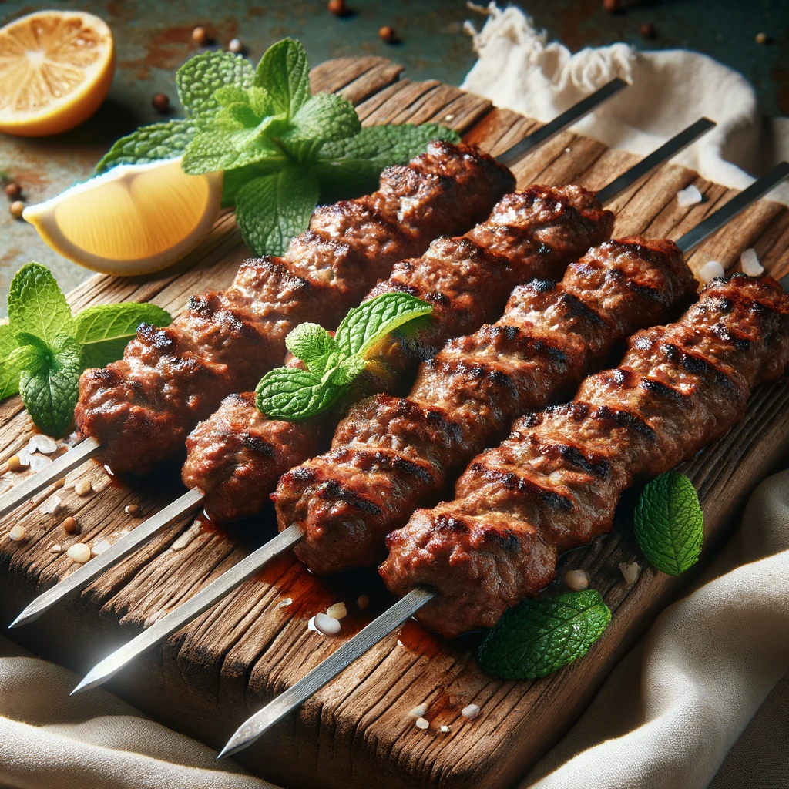

Mutton Seekh Kebab

Mutton Seekh Kebab
Mutton Seekh Kebab is a popular dish from the Indian subcontinent, known for its rich flavors and succulent texture. These kebabs are made from minced mutton (lamb) meat, mixed with a variety of spices and herbs, then shaped onto skewers and cooked over an open flame or in a tandoor. The result is a delicious, aromatic, and slightly charred kebab.
Ingredients
- Minced mutton - 500 grams
- Onion (finely chopped) - 1 medium
- Ginger-garlic paste - 2 teaspoons
- Green chilies (finely chopped) - 2
- Garam masala - 1 teaspoon
- Cumin powder - 1 teaspoon
- Coriander powder - 1 teaspoon
- Fresh coriander leaves (chopped) - 2 tablespoons
- Red chili powder - 1 teaspoon
- Salt, Lemon juice, Oil
Steps
- Preparation and Marination: Mix minced mutton with spices, herbs, and seasonings; marinate for 2 hours or overnight.
- Shaping and Cooking: Shape the marinated mixture onto skewers and grill over an open flame or in a tandoor until cooked through and slightly charred.